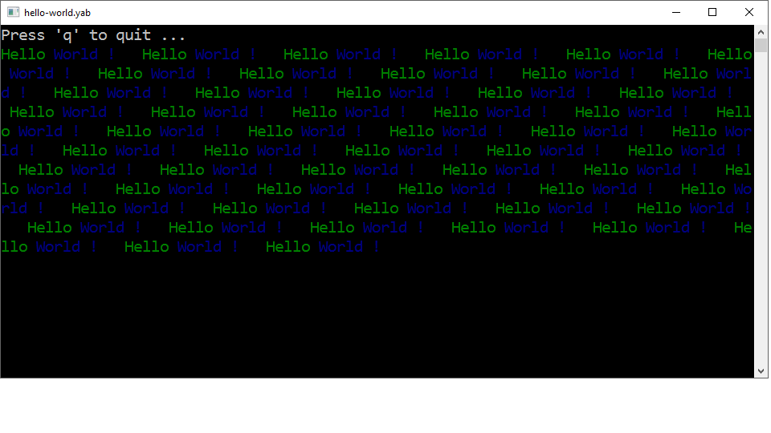

Yabasic is a traditional basic-interpreter. It comes with goto and various loops and allows to define subroutines and libraries. It does simple graphics and printing. Yabasic can call out to libraries written in C and allows to create standalone programs. Yabasic runs under Unix and Windows and has a comprehensive documentation; it is small, simple, open-source and free.
To learn more about yabasic, you may view the Manual of yabasic, browse the faq or read its history or the log of changes and bugs.
This is a simple hello-world.yab written in yabasic, complete with the resulting screenshot:
clear screen
print "Press 'q' to quit ..."
label again
print color("green") "Hello ";
print color("blue") "World ! ";
if (inkey$(1)="q") exit
goto again
